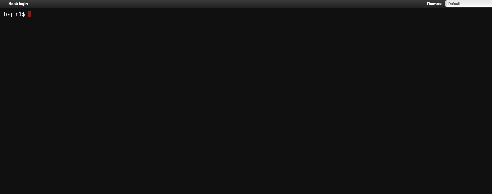

5. Passenger Apps
5.1. ファイル操作
Home Directoryのアイコンをクリックしてください。「富岳」に対するファイルのアップロード・ダウンロード・編集などを行えます。アップロード・ダウンロード可能な最大サイズは10GBです。

Home Directoryの各機能は下記の通りです。個別のファイルやディレクトリに対する操作は「3点＋下三角」のメニューから行えます。
| ツールバー | 説明 |
|---|---|
| Open in Terminal | シェルアクセスを起動 |
| Refresh | ページを再描画 |
| New File | 新規ファイル作成 |
| New Directory | 新規ディレクトリ作成 |
| Upload | ファイルのアップロード |
| Download | ファイルのダウンロード |
| Copy/Move | ファイルのコピー、移動 |
| Delete | ファイルの削除 |
| パスバー | 説明 |
|---|---|
| ↑ | 1つ上のディレクトリに移動 |
| Change directry | ディレクトリの移動 |
| Copy path | 現在のパスをクリップボードにコピー |
| 表示オプション | 説明 |
|---|---|
| Show Owner/Mode | 所有者とパーミッションの表示 |
| Show Dotfiles | ドットファイル（隠しファイル）の表示 |
| Filter | ファイル名による絞り込み |
メニューバーの「Passenger Apps」にあるパスをクリックすると、そのパスを起点としたHome Directoryが起動します。
Rcloneを用いたクラウドストレージに対するファイルの操作も可能です。Rcloneの設定を行うには、対話アプリケーションのリモートデスクトップを起動し、そのターミナルからrcloneもしくはrclone-browserを実行します。設定後にOpen OnDemandのメニューバーの「Help」 -> 「Restart Web Server」をクリックし、Home Directoryを起動すると、設定されたクラウドストレージにアクセスできます。なお、富岳ヘルプデスクではRcloneの設定のサポートは行っておりませんのでご了承ください。
5.2. HPCI共用ストレージ
HPCI Shared Strageのアイコンをクリックください。HPCI（High Performance Computing Infrastructure）が提供するHPCI共用ストレージに対するファイル操作を行えます。本アプリケーションを利用するためには、JWT-SERVERからパスフレーズを事前に発行しておく必要があります。

「HPCI ID」にはJWT-SERVERでパスフレーズを生成したときに表示されるhpcixxxxxxという文字列（xxxxxxは数字）を、「Passphrase」には生成されたパスフレーズを入力した後、「mount」ボタンをクリックください。
5.3. GakuNin RDM
GakuNin RDMのアイコンをクリックください。国立情報学研究所が提供する研究データ管理基盤であるGakuNin RDMに対するファイル操作を行えます。本アプリケーションを利用するためには、GakuNin RDMのプロジェクトを事前に作成しておく必要があります。

「Mount Path」には「富岳」側のファイルシステムのマウントパス（例：/home/rccs-aot/a00000/abc）を、「RDM Node ID」はGakuNin RDMのプロジェクトのURL（https://rdm.nii.ac.jp/xxx/）のxxxの箇所を、「ROM Token」はGakuNin RDMのパーソナルアクセストークンを入力した後、「mount」ボタンをクリックください。
5.4. シェルアクセス
Fugaku Shell Accessのアイコンをクリックください。WebブラウザからログインノードにSSHアクセスし、コマンドラインインタフェースを用いた操作を行うことができます。
5.5. Open Composer
Open Composerアイコンをクリックください。バッチジョブを実行・管理するためのアプリケーションです。詳細は4. バッチジョブを参照ください。
各アプリケーションがカテゴリ毎に表示されます。アプリケーションのアイコンをクリックすると、そのアプリケーション用のWebフォームが表示されます。
ダッシュボードの「Job Script for Fugaku」と「Job Script for Prepost」のアイコンをクリックすると、「富岳」とプリポスト環境で使われているジョブスケジューラであるFujitsu TCSとSlurmの指示文を主に作成するWebフォームが表示されます。
5.6. ジョブのモニタリング
Active Jobsのアイコンをクリックください。ジョブの情報を閲覧や削除を行うことができます。「ID」の列の左側のボタンをクリックすると、ジョブ詳細情報を表示できます。「Actions」の列のボタンをクリックすると、ジョブの削除を行えます。

5.7. バジェットの情報
Budget Infoのアイコンをクリックください。グループ内の各ユーザのバジェット利用量を表示します。管理者は各ユーザのバジェットに上限値を設定できます。

5.8. ディスクの情報
Disk Infoのアイコンをクリックください。グループ内の各ユーザのディスク利用量を表示します。
また、Inactive Disk Infoのアイコンをクリックすると、利用されていないファイルがあるディスクの情報を表示することもできます。
「Select Dataset」で選択されたデータがロードされます。また、「Group」と「User」でフィルタリングを行うことができます。さらに、「Inactive Period」、「Count」、「Size (TiB)」のスライダを使うと、それぞれ「最後にアクセスしてから現在までの期間」、「ファイル数」、「ディスク利用量」でフィルタリングを行えます。